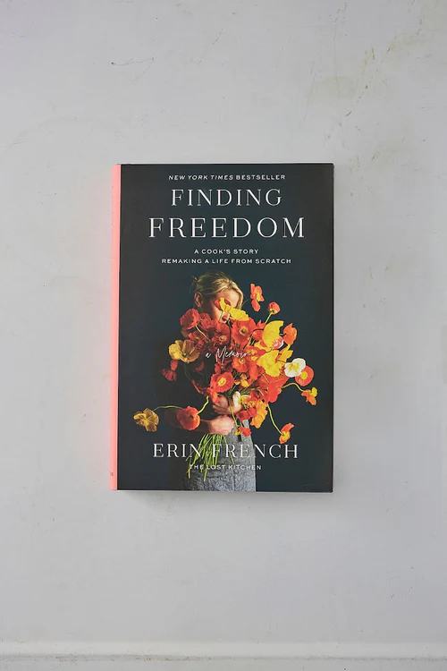

'Big Heart Little Stove' cookbook - by Erin French - signed copy
$45.00

Description
Big Heart Little Stove is your new go-to inspiration for cooking thoughtful and meaningful, yet refreshingly simple meals. With more than 75 recipes and her favorite hospitality “signatures,” Erin French―author of The Lost Kitchen cookbook and the New York Times-bestselling memoir Finding Freedom―invites readers to bring a piece of her beloved restaurant, The Lost Kitchen, home with them. Regardless of whether it’s a dressed-up affair or a quick weeknight meal, French’s recommendations are the same: Start with the best ingredients you can find, keep it simple, and serve with love. But Big Heart Little Stove is more than just a cookbook. With tips and tricks French has used in her own dining room―at home and in the restaurant―this book is your invitation to use what’s around you to create meaningful moments, from setting a table with found treasures, to adorning dishes with edible flowers, to thoughtful gestures such as offering a cold cloth on a hot day. Full of warmth and spirit, Big Heart Little Stove will show you how to create more joy and connection around your table.*Each copy is hand signed by Erin and lovingly wrapped by our small team here in Freedom.
You might also like...


'The Lost Kitchen' cookbook - by Erin French - signed copy
$20.00


'A Cook's Book' - by Nigel Slater
$20.00


'Finding Freedom' - a memoir by Erin French - signed copy
$20.00


'Big Heart Little Stove' inspired notecards - 'moments in Maine'
$20.00